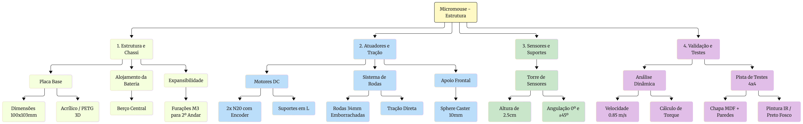
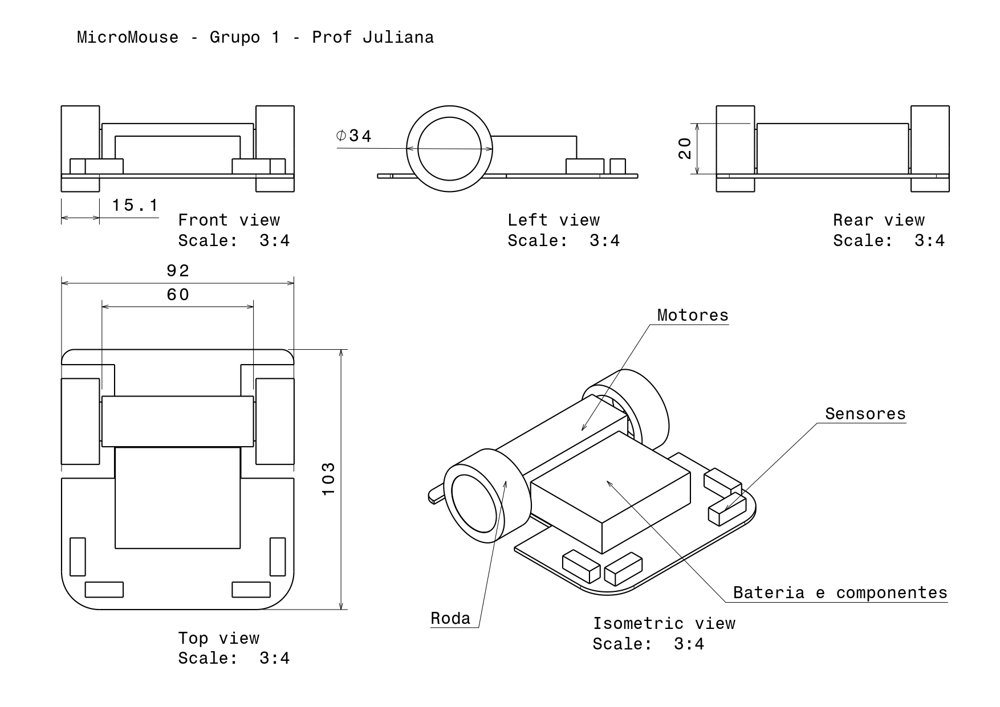
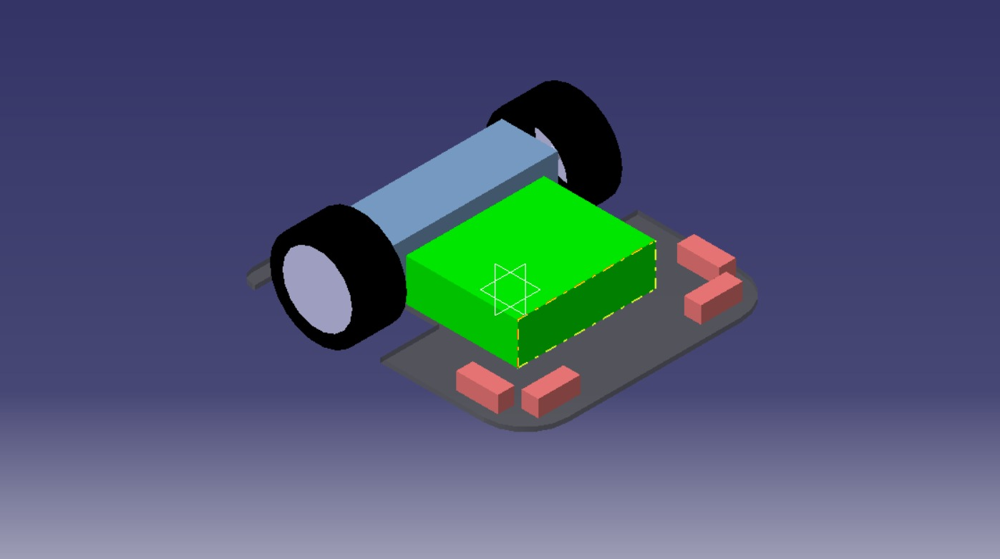

Estruturas
1. Visão Geral do Projeto¶
A seleção de materiais e componentes do Micromouse foi guiada pela busca pelo menor peso possível, alta eficiência mecânica, repetibilidade de movimento e cumprimento estrito das dimensões do labirinto (\(18\,\text{cm} \times 18\,\text{cm}\) com paredes de \(1{,}2\,\text{cm}\)).
O robô adota velocidade operacional moderada: não busca velocidade máxima, mas mantém ritmo suficiente para concluir o percurso com ampla folga dentro do tempo limite de \(10\) minutos.
Fluxograma Geral do Projeto¶
O fluxograma abaixo apresenta, de forma resumida, a organização dos principais elementos abordados neste documento, desde os requisitos do projeto até a definição estrutural, componentes, dimensões, modelagem CAD e justificativas das decisões de projeto.

2. Projeto Conceitual da Estrutura e Atuadores¶
2.1 Materiais Utilizados¶
A Tabela apresenta a Lista de Materiais (BOM) consolidada.
| Item | Componente / Descrição | Qtd. | Finalidade / Observações Técnicas |
|---|---|---|---|
| 1. Sistema de Tração e Apoio | |||
| 1.1 | Micro Motor DC N20 com Encoder (\(6\,\text{V}\), \(600\,\text{RPM}\), \(\approx 30\,\text{g}\)/un) | 2 un | Atuador principal de tração com odometria em malha fechada. |
| 1.2 | Roda emborrachada \(34\,\text{mm} \times 6{,}5\,\text{mm}\) (Eixo D \(3\,\text{mm}\)) | 2 un | Tração com alto atrito, garantindo repetibilidade. |
| 1.3 | Suporte em L (Bracket) para Motor N20 | 2 un | Fixação mecânica rígida dos motores no chassi. |
| 1.4 | Rodízio de Esfera (Sphere Caster \(360^\circ\)) \(10\,\text{mm}\) | 1 un | Apoio frontal omnidirecional sem arrasto angular. |
| 2. Chassi e Estrutura Base | |||
| 2.1 | Placa Base do Chassi (\(92 \times 103\,\text{mm}\)) | 1 un | Acrílico \(3\,\text{mm}\) (laser) ou impressão 3D PETG/PLA. |
| 2.2 | Suporte impresso em 3D (PLA/PETG) para Bateria | 1 un | Acomodação centralizada sobre o eixo de tração. |
| 2.3 | Suportes/Torre para Sensores de Distância (PLA/PETG) | 1 un | Fixação modular (\(0^\circ\) e \(\pm45^\circ\)) na altura de \(2{,}5\,\text{cm}\). |
| 3. Elementos de Fixação e Contingência | |||
| 3.1 | Kit de Parafusos e Porcas M2 e M3 (Aço inox) | 1 kit | Montagem de motores, caster e componentes. |
| 3.2 | Espaçadores M3 Sextavados em Nylon (\(15\,\text{mm}\)) | 4 un | Reserva para expansão opcional em 2º andar (por exemplo, giroscópio). |
| 3.3 | Fita Dupla Face de Alta Fixação / Abraçadeiras | 1 un | Fixação auxiliar de componentes e cabos. |
| 4. Pista de Testes \(4 \times 4\) (Requisito da Disciplina) | |||
| 4.1 | Chapa de MDF de \(72\,\text{cm} \times 72\,\text{cm}\) (\(15\,\text{mm}\)) | 1 un | Base física do labirinto de testes. |
| 4.2 | Ripas de MDF/Madeira (\(5\,\text{cm} \times 1{,}2\,\text{cm}\)) | 12 m | Paredes das células do labirinto. |
| 4.3 | Tinta Spray Preto Fosco | 1 lata | Pintura do piso do labirinto (absorção de luz IR). |
| 4.4 | Tinta Spray Branco e Tinta Vermelha (topo) | 1 lata | Pintura padronizada das paredes do labirinto. |
2.2 Justificativa da Escolha dos Materiais Base¶
- Placa do Chassi Base (Acrílico \(3\,\text{mm}\) vs. Impressão 3D PETG): O acrílico fornece alta rigidez e acabamento plano por corte a laser; a impressão 3D em PETG/PLA permite integrar os berços da bateria e suportes diretamente na peça.
- Apoio Omnidirecional (Sphere Caster em Nylon): Escolhido para eliminar o arrasto mecânico e travamentos angulares comuns em rodízios pivotantes em rotações de \(90^\circ\) e \(180^\circ\).
- Elementos de Fixação em Nylon: A escolha de espaçadores sextavados M3 em nylon reduz a massa da estrutura em comparação com conexões metálicas em latão.
- Motor DC com Encoder (N20) vs. Motor de Passo (Nema 8/11): O N20 pesa cerca de \(30\,\text{g}\) e mede \(12 \times 10 \times 24\,\text{mm}\), enquanto motores Nema são mais pesados e volumosos. Além disso, o motor de passo opera normalmente em malha aberta e pode perder passos sem que o controlador perceba, comprometendo a odometria. O motor DC com encoder mede o movimento real da roda, permite correção contínua por realimentação e consome corrente apenas quando está em movimento.
2.3 Partes Fundamentais do Projeto¶
A tabela abaixo sintetiza as especificações funcionais dos subsistemas mecânicos do robô.
| Elemento | Solução Adotada | Função e Justificativa Técnica |
|---|---|---|
| Chassi Base | Placa monoplano de \(92 \times 103\,\text{mm}\) (Acrílico \(3\,\text{mm}\) ou PETG) | Elemento estrutural principal. Geometria ajustada para rotações de \(90^\circ\) e \(180^\circ\) dentro de uma única célula. |
| Atuadores | 2x Micro Motores DC N20 (\(6\,\text{V}\), \(600\,\text{RPM}\), \(\approx 30\,\text{g}\)) com Encoders | Tração diferencial e odometria em malha fechada. Alto torque específico em dimensões compactas (\(12 \times 10 \times 24\,\text{mm}\)). |
| Transmissão | Roda acoplada diretamente ao eixo de saída da caixa de redução do motor | Não há correia ou engrenagem externa, o que elimina folga adicional. A folga interna da caixa de redução do N20 é pequena e não é medida pelo encoder (fixado ao eixo do motor); seu efeito é atenuado pelo realinhamento com as paredes após os giros. |
| Rodas e Pneus | Rodas de \(34\,\text{mm} \times 6{,}5\,\text{mm}\) com borracha vulcanizada | Diâmetro que permite velocidade máxima de até \(0{,}85\,\text{m/s}\), com operação prevista a \(0{,}4\,\text{m/s}\). A borracha evita a patinagem, mantendo a precisão da odometria. |
| Apoio Frontal | Esfera Deslizante Omnidirecional (Sphere Caster \(10\,\text{mm}\)) em Nylon | Apoio em 3 pontos sem arrasto angular em giros de \(90^\circ\) e \(180^\circ\) sobre o próprio eixo. |
| Suportes dos Motores | Suportes em L (Brackets) com parafusos M2 | Fixação mecânica rígida ao chassi, mantendo o alinhamento paralelo dos eixos. |
| Torre de Sensores | Suporte angulado impresso em 3D (PLA/PETG) para sensores de distância | Posiciona os sensores na altura ideal de \(2{,}5\,\text{cm}\) (\(25\,\text{mm}\)) do solo (centro da parede de \(50\,\text{mm}\)) com angulações de \(0^\circ\) e \(\pm45^\circ\). A leitura por distância (e não apenas binária) permite centralizar o robô no corredor. |
| Alojamento da Bateria | Berço central com trava mecânica no chassi | Distribuição uniforme de peso sobre o eixo de tração, estabilizando o Centro de Gravidade (CG). |
| Carenagem / Cobertura | Design aberto / Placa aparente | Descarte de carenagem para otimizar dissipação térmica, manutenção e menor massa total. |
3. Especificações Técnicas dos Atuadores e Análise Eletromecânica¶
A tabela abaixo resume os parâmetros nominais dos atuadores selecionados (Micro Motores N20), as metas de desempenho adotadas e as características geométricas da tração.
| Parâmetro | Símbolo / Unidade | Valor Projetado |
|---|---|---|
| Massa Estimada do Robô | \(m\) (g) | \(200\,\text{g}\) (\(0{,}20\,\text{kg}\)) |
| Raio da Roda | \(r\) (mm) | \(17\,\text{mm}\) (\(0{,}017\,\text{m}\)) |
| Diâmetro da Roda | \(D\) (mm) | \(34\,\text{mm}\) (\(0{,}034\,\text{m}\)) |
| Quantidade de Motores | \(n\) | 2 (Tração Diferencial) |
| Tensão Nominal de Operação | \(V\) (V) | \(6{,}0\,\text{V}\) |
| Velocidade Angular Sem Carga | RPM | \(600\,\text{RPM}\) |
| Velocidade Máxima Atingível (eficiência de \(80\%\)) | \(v_{\text{máx,ef}}\) (m/s) | \(0{,}85\,\text{m/s}\) |
| Velocidade Operacional de Cruzeiro | \(v_{\text{op}}\) (m/s) | \(0{,}40\,\text{m/s}\) |
| Velocidade de Giro (roda) | \(v_{\text{giro}}\) (m/s) | \(0{,}25\,\text{m/s}\) |
| Aceleração de Projeto | \(a\) (m/s²) | \(1{,}6\,\text{m/s}^2\) |
| Torque de Stall (por motor) | \(T_{\text{stall}}\) (\(\text{N}\cdot\text{m}\)) | \(0{,}0245\,\text{N}\cdot\text{m}\) (\(0{,}25\,\text{kgf}\cdot\text{cm}\)) |
| Corrente sem Carga (por motor) | \(I_0\) (mA) | \(60\,\text{mA}\) |
| Corrente de Cruzeiro (por motor, estimada) | \(I_{\text{cruz}}\) (mA) | \(150\,\text{mA}\) |
| Corrente de Stall / Pico (por motor) | \(I_{\text{pico}}\) (A) | \(0{,}80\,\text{A}\) |
| Resolução do Encoder | PPR | A confirmar no datasheet do modelo adquirido |
| Dimensões do Chassi (largura com rodas: \(99\,\text{mm}\)) | \(L \times C \times A\) (mm) | \(92 \times 103 \times 50\,\text{mm}\) |
3.1 Análise Dinâmica e Dimensionamento de Torque¶
Velocidade Linear (\(v_{\text{máx}}\) e \(v_{\text{op}}\))¶
A velocidade angular sem carga do motor (\(\omega\)) a \(600\,\text{RPM}\) é:
A velocidade linear teórica na roda de \(r = 0{,}017\,\text{m}\) é:
Considerando eficiência mecânica de \(80\%\), obtém-se a velocidade máxima efetivamente atingível:
Como o robô não precisa ser veloz, adota-se uma velocidade operacional de cruzeiro de \(v_{\text{op}} = 0{,}4\,\text{m/s}\). A rotação correspondente na roda é:
ou seja, cerca de \(37\%\) da rotação sem carga do motor. Essa reserva de rotação mantém o controle em malha fechada distante da saturação e permite ao PID compensar perturbações sem esgotar a tensão disponível.
Em velocidade constante, o robô percorre uma célula (\(18\,\text{cm}\)) em:
Aceleração e Torque Requerido por Motor (\(T_{\text{motor}}\))¶
Para garantir arranques e retomadas suaves, com baixo risco de patinagem, adota-se a aceleração de \(a = 1{,}6\,\text{m/s}^2\), o que leva o robô de \(0\) a \(0{,}4\,\text{m/s}\) em:
A Força de Tração Total (\(F_{\text{total}}\)) necessária para acelerar a massa de \(m = 0{,}20\,\text{kg}\) é:
O torque total necessário nas rodas é:
Dividindo o esforço entre os 2 motores de tração:
Análise da Margem de Operação: O torque exigido por motor durante a aceleração (\(0{,}0277\,\text{kgf}\cdot\text{cm}\), ou \(0{,}27\,\text{N}\cdot\text{cm}\)) corresponde a apenas \(11\%\) do torque de stall do motor N20 (\(0{,}25\,\text{kgf}\cdot\text{cm}\)). Mesmo que a massa final chegue a \(300\,\text{g}\), o torque por motor sobe para cerca de \(0{,}41\,\text{N}\cdot\text{cm}\) (\(\approx 17\%\) do stall), mantendo ampla margem de segurança contra sobreaquecimento e saturação. Vale ressaltar que o torque disponível do motor diminui com o aumento da rotação; como a operação ocorre a apenas \(37\%\) da rotação sem carga, a margem real permanece confortável.
Tempo de Avanço e de Giro¶
Considerando aceleração e frenagem com \(a = 1{,}6\,\text{m/s}^2\), a distância percorrida em cada rampa é \(d_a = v^2/(2a) = 0{,}05\,\text{m}\). O tempo para avançar uma célula partindo do repouso e parando ao final é:
Quando o robô atravessa células consecutivas sem parar, o tempo por célula se aproxima do valor de cruzeiro (\(0{,}45\,\text{s}\)).
Nos giros sobre o próprio eixo, a bitola de \(92{,}5\,\text{mm}\) (centro a centro das rodas) faz cada roda percorrer, em um giro de \(90^\circ\), o arco:
Com velocidade de giro de \(0{,}25\,\text{m/s}\) e a mesma aceleração, obtém-se \(t_{90^\circ} \approx 0{,}45\,\text{s}\). Para o giro de \(180^\circ\), o arco dobra (\(\approx 0{,}145\,\text{m}\)) e o tempo é \(t_{180^\circ} \approx 0{,}75\,\text{s}\).
Estimativa do Tempo de Percurso¶
Em um cenário pessimista de \(200\) avanços de célula com parada (\(0{,}70\,\text{s}\) cada) e \(100\) giros de \(90^\circ\) (\(0{,}45\,\text{s}\) cada):
valor bem inferior ao limite de \(10\) minutos, o que confirma que a velocidade moderada adotada é suficiente e deixa margem para erros, recuperações e reexploração do labirinto.
Demanda Elétrica dos Atuadores¶
A corrente do motor é aproximadamente proporcional ao torque: \(I \approx I_0 + (I_{\text{pico}} - I_0)\,T/T_{\text{stall}}\). Na aceleração de projeto, com \(T/T_{\text{stall}} \approx 0{,}11\), resulta \(I \approx 0{,}06 + 0{,}74 \times 0{,}11 \approx 0{,}14\,\text{A}\) por motor. Adota-se o valor conservador de \(150\,\text{mA}\) por motor.
- Corrente em Cruzeiro: \(I_{\text{cruzeiro}} \approx 2 \times 150\,\text{mA} = 300\,\text{mA}\) (\(0{,}30\,\text{A}\)).
- Corrente de Pico (Bloqueio): \(I_{\text{pico\_total}} = 2 \times I_{\text{stall}} = 2 \times 0{,}80\,\text{A} = 1{,}60\,\text{A}\). Esse valor só ocorre com as rodas travadas, mas o driver de motores (ponte H) e a bateria devem ser dimensionados para suportá-lo.
4. Detalhamento Geométrico e Modelagem em CAD¶
4.1 O Desenho em CAD e Definição das Cotas¶
A modelagem tridimensional em CAD valida a integração espacial dos subsistemas antes da fabricação física. As dimensões foram ajustadas para garantir rotações completas (\(90^\circ\) e \(180^\circ\)) no interior de uma única célula do labirinto (\(180 \times 180\,\text{mm}\) com espaço livre interno de \(168 \times 168\,\text{mm}\)). Para o giro sobre o próprio eixo, o critério é a diagonal do chassi, \(\sqrt{92^2 + 103^2} \approx 138{,}1\,\text{mm}\), inferior aos \(168\,\text{mm}\) livres, desde que o eixo de rotação coincida com o centro geométrico e nenhum componente (sensores, bateria) ultrapasse o contorno de \(92 \times 103\,\text{mm}\) (as rodas, com largura total de \(99\,\text{mm}\), também ficam dentro do limite de \(168\,\text{mm}\)).
4.2 Dimensões e Cotas¶
| Parâmetro Geométrico | Cota / Valor | Justificativa / Impacto Operacional |
|---|---|---|
| Largura do Chassi (\(L\)) | \(92\,\text{mm}\) (largura total com rodas: \(99\,\text{mm}\)) | A placa possui recortes nas posições das rodas, pois as faces internas das rodas (\(86\,\text{mm}\)) ficam dentro do contorno da placa. A largura total do robô é definida pelas rodas e garante \(34{,}5\,\text{mm}\) de folga lateral por lado no corredor de \(168\,\text{mm}\). |
| Comprimento Total (\(C\)) | \(103\,\text{mm}\) | Diagonal de \(\approx 138{,}1\,\text{mm}\) permite giros de \(90^\circ\) e \(180^\circ\) no próprio eixo sem colisão com as paredes. |
| Altura do Chassi Base (\(A_b\)) | \(3\,\text{mm}\) | Espessura para acrílico/PETG com alta rigidez e baixa massa. |
| Altura dos Sensores (\(h_s\)) | \(25\,\text{mm}\) (\(2{,}5\,\text{cm}\)) | Centralização exata do feixe óptico na altura média da parede de \(50\,\text{mm}\). |
| Diâmetro das Rodas (\(D\)) | \(34\,\text{mm}\) | Permite velocidade máxima de \(\approx 0{,}85\,\text{m/s}\) a \(600\,\text{RPM}\), com folga sobre a velocidade operacional de \(0{,}4\,\text{m/s}\). |
| Bitola (\(B\)) | \(86\,\text{mm}\) entre faces internas das rodas (\(92{,}5\,\text{mm}\) centro a centro) | Define a cinemática dos giros. O valor centro a centro é o usado no cálculo do arco de giro e deve ser calibrado experimentalmente. |
4.3 Representação Técnica — Assembly¶
A representação técnica do Assembly apresenta a configuração estrutural do Micromouse, suas principais vistas e as dimensões utilizadas no projeto.

4.4 Modelo Tridimensional¶
O modelo tridimensional apresenta a estrutura do Micromouse e a integração dos principais componentes mecânicos e estruturais.

5. Explicação do Desenho e Integração dos Componentes¶
A arquitetura do desenho fundamenta-se na simetria, compacidade, repetibilidade de movimento e centralização de massa.
5.1 Arranjo da Tração Diferencial¶
Motores N20 dispostos transversalmente no centro do chassi para que as rotações em torno do próprio eixo ocorram sem deslocamento do centro geométrico do robô.
5.2 Apoio Frontal Omnidirecional¶
Sphere Caster de \(10\,\text{mm}\) na extremidade frontal, definindo um plano estável em três pontos sem atrito lateral em curvas.
5.3 Distribuição de Massa¶
A bateria é posicionada sobre o eixo dos motores, garantindo que \(\approx 40\%\) da massa atue como força normal nas rodas para maximizar a tração.
5.4 Torre de Sensores Centralizada¶
Posicionamento frontal mantendo os feixes a \(2{,}5\,\text{cm}\) do solo (metade da altura da parede) com angulações em \(0^\circ\) e \(\pm45^\circ\), evitando vazamento do sinal por cima da parede.
5.5 Estratégia de Controle e de Giro¶
O desempenho mecânico projetado depende de uma estratégia de controle coerente com a escolha de motores DC com encoder:
- Controle de velocidade: cada motor é controlado por um PID de velocidade em malha fechada, com realimentação do encoder e saída em PWM, garantindo que as duas rodas cumpram a referência de velocidade.
- Centralização no corredor: os sensores de distância (medição contínua, e não apenas detecção binária de parede) geram o erro lateral (distância à parede esquerda menos a da direita), que ajusta a referência de velocidade de cada roda. O controle é, portanto, em cascata: o sensor define a referência e o encoder garante seu cumprimento.
- Giros de \(90^\circ\) e \(180^\circ\): executados por odometria, com aceleração limitada para evitar patinagem. A bitola efetiva é calibrada experimentalmente (por exemplo, comandando várias voltas completas e ajustando o parâmetro), e o robô se realinha com as paredes após o giro. Durante o giro as leituras dos sensores variam rapidamente e não são usadas para controle.
- Correção de odometria: os sensores a \(\pm45^\circ\) detectam a abertura de uma nova célula, e o encoder registra o ponto em que isso ocorreu, permitindo recalibrar a posição a cada célula e evitar acúmulo de erro.
- Giroscópio (opcional): devido à velocidade moderada, encoder e realinhamento pelas paredes são suficientes. Reserva-se espaço no chassi (espaçadores M3) e pinos de comunicação para a inclusão de um giroscópio caso os testes revelem imprecisão nos giros.
- Ruído elétrico: os motores de escovas podem contaminar as leituras analógicas dos sensores. Preveem-se capacitores cerâmicos de \(\approx 100\,\text{nF}\) nos terminais dos motores, desacoplamento na alimentação dos sensores, separação física entre fios de motores e de sensores e leitura com o emissor ligado e desligado (subtração da luz ambiente).
6. Justificativa das Principais Decisões de Projeto¶
A tabela abaixo sintetiza o embasamento das decisões técnicas adotadas para suprir as demandas mecânicas e de software.
| Decisão de Projeto | Solução Implementada | Motivo / Justificativa Técnica |
|---|---|---|
| Geometria e Manobras | Formato compacto \(92 \times 103\,\text{mm}\) com eixos centralizados | Permite giros de \(90^\circ\) e \(180^\circ\) no próprio eixo dentro do limite de \(168\,\text{mm}\) de uma célula (diagonal de \(\approx 138{,}1\,\text{mm}\)). |
| Tipo de Motor | Motor DC N20 com encoder e PID em malha fechada | Menor massa e volume que motores de passo, mantém desempenho em rotações mais altas, mede o movimento real e corrige erros, e consome corrente apenas em movimento. |
| Perfil de Velocidade | Cruzeiro de \(0{,}4\,\text{m/s}\) e aceleração de \(1{,}6\,\text{m/s}^2\) | Velocidade moderada: reduz patinagem, vibração e ruído nos sensores, mantém o motor a \(\approx 11\%\) do torque de stall e conclui o percurso em cerca de \(3\) min (limite de \(10\) min). |
| Repetibilidade Odométrica | Pneus vulcanizados + Sphere Caster + encoder + aceleração limitada | Reduz patinagem e arrasto, garantindo repetibilidade de contagem nos encoders. A folga interna da caixa de redução é pequena e compensada pelo realinhamento com as paredes. |
| Tipo de Sensor | Sensores de distância (medição contínua) a \(0^\circ\) e \(\pm45^\circ\) | Permitem centralizar o robô no corredor (folga de \(34{,}5\,\text{mm}\) por lado), parar a distância definida da parede e recalibrar a odometria; a detecção de parede é obtida por limiar em software. |
| Altura dos Sensores (\(2{,}5\,\text{cm}\)) | Torre frontal com feixe alinhado a \(25\,\text{mm}\) do solo | Ponto focal ideal no centro da parede (\(50\,\text{mm}\)), rebaixando o CG e prevenindo leituras falsas por cima da parede. |
| Distribuição de Massa / CG | Bateria sobre o eixo central e placa monoplano | Mantém o CG próximo ao solo e evita perda de aderência nas acelerações. |
| Ausência de Carenagem | Design aberto com componentes aparentes | Reduz a massa morta em \(15\)--\(25\,\text{g}\), otimiza troca térmica e facilita a manutenção. |
6.1 Análise do Compromisso entre Velocidade, Massa e Estabilidade¶
- Massa Reduzida vs. Tração e Repetibilidade: Ao limitar a massa total a \(\approx 200\,\text{g}\), a força de inércia permanece baixa. O acoplamento rígido e a alta aderência dos pneus garantem que a odometria mantenha alta repetibilidade em acelerações e frenagens.
- Velocidade Moderada vs. Tempo de Percurso: A velocidade de \(0{,}4\,\text{m/s}\) sacrifica desempenho máximo, mas ganha em confiabilidade: menos patinagem, leituras de sensores mais estáveis, menor consumo e ampla margem no tempo de prova. A capacidade máxima do conjunto (\(\approx 0{,}85\,\text{m/s}\)) permanece disponível caso seja desejável aumentar o ritmo após a validação.
- Geometria Monoplano vs. Capacidade de Expansão: A decisão por uma base de andar único atende ao requisito primário de estabilidade dinâmica. A adição do padrão de furações M3 garante a expansibilidade futura (por exemplo, giroscópio) sem penalizar o projeto conceitual inicial.
7. Considerações Finais¶
O projeto estrutural do Micromouse integra os requisitos dimensionais do labirinto, a seleção dos materiais, os atuadores, o sistema de tração, os sensores e a modelagem geométrica em CAD.
As decisões de projeto foram orientadas principalmente pela necessidade de manter uma estrutura compacta, leve e estável, garantindo espaço para os componentes e condições adequadas para os movimentos de 90° e 180° dentro do labirinto. A adoção de motores DC com encoder, controle PID em malha fechada, sensores de distância e velocidade operacional moderada (\(0{,}4\,\text{m/s}\)) atende ao tempo de prova com ampla folga, mantém os atuadores muito abaixo de seu limite de torque e favorece a repetibilidade dos movimentos.
Histórico de Revisões¶
| Versão | Data | Descrição | Autor(es) |
|---|---|---|---|
| 1.0 | 28/09/2026 | Criação do projeto conceitual de estruturas (chassi, suportes, atuadores, rodagem) | Jefferson de Souza Reis |
| 1.0 | 28/09/2026 | Definição dos sensores e material do chassi | Geovana (Bygeo57) |
| 1.0 | 28/09/2026 | Levantamento de dados técnicos dos motores | Júlio César (DeNNis715) |
| 1.0 | 28/09/2026 | Estruturação e revisão do documento | Murilo (MuriloPi13) |